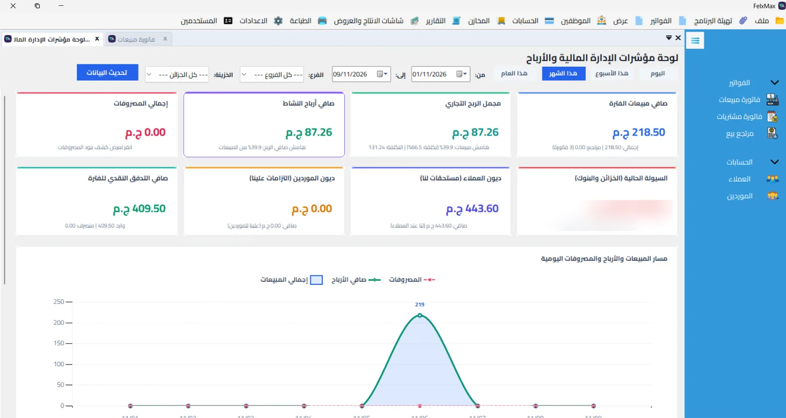
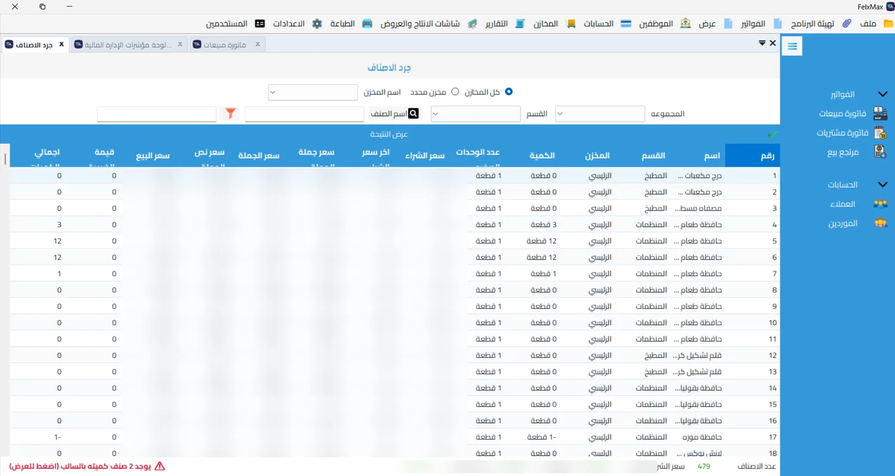

كمية كل صنف في كل مخزن وأسعار البيع، مع فلترة بالمخزن والقسم والمجموعة والبحث باسم الصنف.
برنامج حسابات ومخازن
من أول فاتورة
لآخر تقرير.
سجّل فواتيرك، تابع المخزون وحسابات العملاء والموردين ومحافظك الإلكترونية، وشوف مبيعاتك وأرباحك من شاشة واحدة.
FlexMax Accounts

- بيشتغل على أكتر من جهاز حتى لو في أماكن مختلفة
- مستخدمين بدون حد في الترخيص
- نسخ احتياطي تلقائي واسترجاع بسيط
- طباعة الفواتير وكل التقارير A4 وتصدير Excel
شاشات من شغل حقيقي
اضغط على أي شاشة وشوفها بالتفصيل. أسماء العملاء وأرقام الهواتف مموّهة لحماية الخصوصية.
FlexMax Accounts

تكبير اللقطة ↗سجل تفصيلي لحركة أي صنف: وارد ومنصرف وتحويلات، والرصيد بعد كل حركة، مع طباعة وتصدير Excel.
مديونية ورصيد كل عميل وكشف معاملاته، مع طباعة A4 وتصدير Excel.
أرصدة الموردين وفواتير الشراء والمدفوع والمتبقي في شاشة واحدة.
الكمية المستهلكة وتكلفة كل خامة في الإنتاج والمبيعات.
حوّل واستلم من فودافون كاش وإنستا باي، وشوف الليمت اليومي والشهري المتبقي قبل ما تنفذ العملية.
كل حركة بالمبلغ والعمولة والرسوم وحالة السداد، مع إجمالي الوارد والصادر وعمولات المحل.
اللي هتحتاجه في يوم الشغل
مديونيات وأرصدة وكشوف معاملات لكل عميل ومورد في شاشة واحدة.
جرد الأصناف، وكارت تتبع حركة كل صنف، ونقل المخزون بين المخازن، ومركز باركود وطباعة باركود، وتقارير استهلاك الخامات في الإنتاج.
طباعة الفواتير، وكل التقارير فيها طباعة A4 وتصدير Excel، ولوحة مؤشرات للمبيعات والأرباح والمصروفات.
متابعة محافظ فودافون كاش وإنستا باي، والليمت اليومي والشهري المتبقي، وحساب العمولة والرسوم تلقائياً.
الديمو على شغل شبه شغلك
اختار نشاطك وابعتلنا على واتساب، وهنركّز على الشاشات اللي تهمك.
قبل ما تتواصل
البرنامج بيشتغل على أكتر من جهاز؟
أيوه، بيشتغل على أكتر من جهاز حتى لو الأجهزة في أماكن مختلفة.
في حد لعدد المستخدمين؟
لا، عدد المستخدمين مش مرتبط بالترخيص وتقدر تضيف اللي تحتاجه. اللي بيختلف هو عدد الأجهزة، والنسخة بتستقبل أكتر من مستخدم عادي.
النسخ الاحتياطي بيتعمل إزاي؟
النسخ الاحتياطي بيتعمل تلقائي، وتقدر تعمله يدوي في أي وقت. والاسترجاع بسيط جداً، وتقدر تعمله بنفسك على مسؤوليتك.
أقدر أطبع الفواتير والتقارير وأطلّعها Excel؟
أيوه، بتطبع الفواتير، وكل التقارير فيها طباعة بمقاس A4 وتصدير إلى Excel.
هشوف إيه في العرض؟
هتشوف شاشات البرنامج وسيناريو مناسب لنشاطك، وتقدر تسأل عن طريقة تطبيقه في شغلك.
أتواصل معاكم إزاي؟
أسرع طريقة واتساب على 01101830923.